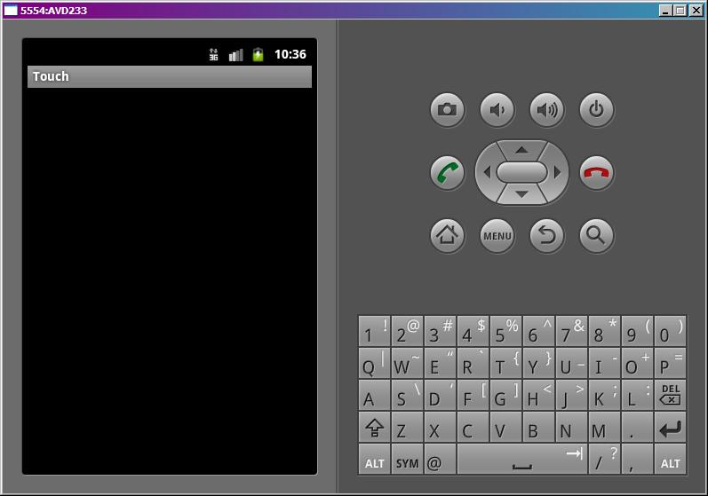
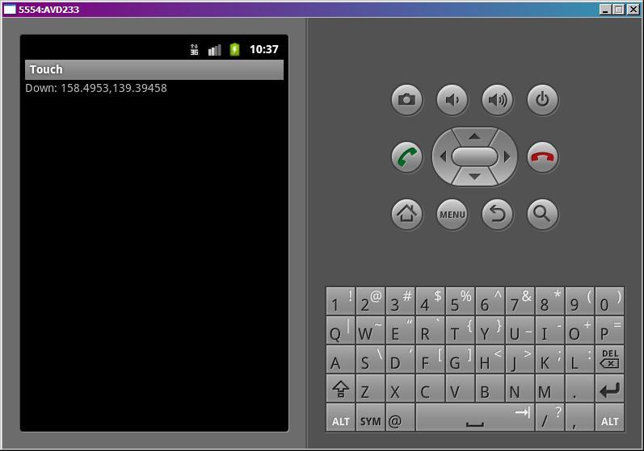
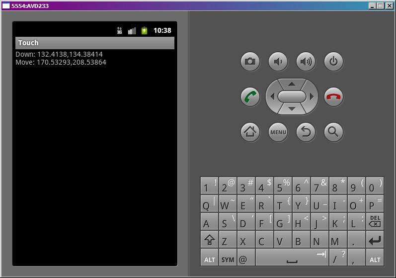
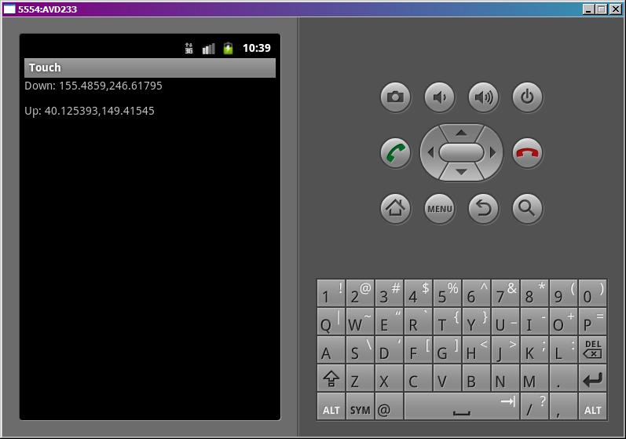

В этом уроке:
- обрабатываем касание
Раньше мы для View-компонентов использовали OnClickListener и ловили короткие нажатия. Теперь попробуем ловить касания и перемещения пальца по компоненту. Они состоят из трех типов событий:
- нажатие (палец прикоснулся к экрану)
- движение (палец движется по экрану)
- отпускание (палец оторвался от экрана)
Все эти события мы сможем ловить в обработчике OnTouchListener, который присвоим для View-компонента. Этот обработчик дает нам объект MotionEvent, из которого мы извлекаем тип события и координаты.
На этом уроке рассмотрим только одиночные касания. А мультитач – на следующем уроке.
Создадим проект:
Project name: Lesson102
Package name: com.mycompany.myapp
Build Target: Android 4.0
Application name: Touch
Create Activity: MainActivity
MainActivity.java:
package com.mycompany.myapp;
import android.app.Activity;
import android.os.Bundle;
import android.view.MotionEvent;
import android.view.View;
import android.view.View.OnTouchListener;
import android.widget.TextView;
public class MainActivity extends Activity implements OnTouchListener {
TextView tv;
float x;
float y;
String sDown;
String sMove;
String sUp;
/** Called when the activity is first created. */
@Override
public void onCreate(Bundle savedInstanceState) {
super.onCreate(savedInstanceState);
tv = new TextView(this);
tv.setOnTouchListener(this);
setContentView(tv);
}
@Override
public boolean onTouch(View v, MotionEvent event) {
x = event.getX();
y = event.getY();
switch (event.getAction()) {
case MotionEvent.ACTION_DOWN: // нажатие
sDown = "Down: " + x + "," + y;
sMove = ""; sUp = "";
break;
case MotionEvent.ACTION_MOVE: // движение
sMove = "Move: " + x + "," + y;
break;
case MotionEvent.ACTION_UP: // отпускание
case MotionEvent.ACTION_CANCEL:
sMove = "";
sUp = "Up: " + x + "," + y;
break;
}
tv.setText(sDown + "\n" + sMove + "\n" + sUp);
return true;
}
}MainActivity реализует интерфейс OnTouchListener для того, чтобы выступить обработчиком касаний.
В onCreate мы создаем новый TextView, сообщаем ему, что обработчиком касаний будет Activity, и помещаем на экран.
Интерфейс OnTouchListener предполагает, что Activity реализует его метод onTouch. На вход методу идет View для которого было событие касания и объект MotionEvent с информацией о событии.
Методы getX и getY дают нам X и Y координаты касания. Метод getAction дает тип события касания:
ACTION_DOWN – нажатие
ACTION_MOVE – движение
ACTION_UP – отпускание
ACTION_CANCEL – практически никогда не случается. Насколько я понял, возникает в случае каких-либо внутренних сбоев, и следует трактовать это как ACTION_UP.
В случае ACTION_DOWN мы пишем в sDown координаты нажатия.
В случае ACTION_MOVE пишем в sMove координаты точки текущего положения пальца. Если мы будем перемещать палец по экрану – этот текст будет постоянно меняться.
В случае ACTION_UP или ACTION_CANCEL пишем в sUp координаты точки, в которой отпустили палец.
Все это в конце события выводим в TextView. И возвращаем true – мы сами обработали событие.
Теперь мы будем водить пальцем по экрану (курсором по эмулятору) в приложении, и на экране увидим координаты начала движения, текущие координаты и координаты окончания движения.
Все сохраним и запустим приложение.

Ставим палец (курсор) на экран

Если вчерашний вечер не удался, голова не болит, рука тверда и не дрожит :), то появились координаты нажатия.
Если же рука дрогнула, то появится еще и координаты перемещения.

Продолжаем перемещать палец и видим, как меняются координаты Move.
Теперь отрываем палец от экрана и видим координаты точки, в которой это произошло

В целом все несложно. При мультитаче процесс немного усложнится, там уже будем отслеживать до 10 касаний.
Если вы уже знакомы с техникой рисования в Android, то вполне можете создать приложение выводящее на экран геометрическую фигуру, которую можно пальцем перемещать. Простейший пример реализации можно посмотреть тут: http://forum.startandroid.ru/viewtopic.php?f=28&t=535.